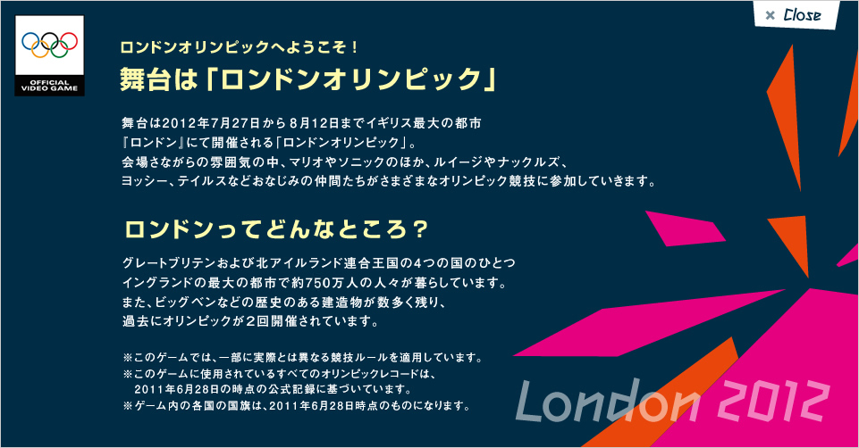
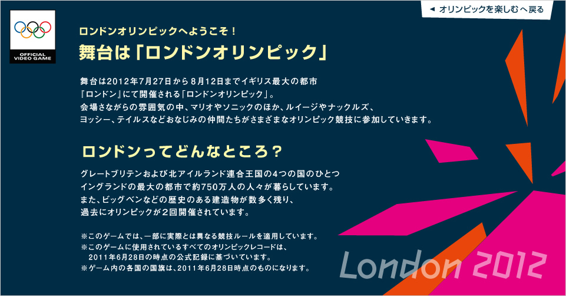
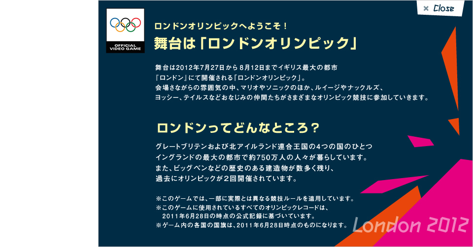

<!DOCTYPE html PUBLIC "-//W3C//DTD XHTML 1.0 Transitional//EN" "http://www.w3.org/TR/xhtml1/DTD/xhtml1-transitional.dtd">

<html lang="ja" xmlns="http://www.w3.org/1999/xhtml">

<head>

<meta http-equiv="Content-Type" content="text/html; charset=shift_jis" />

<meta http-equiv="content-style-type" content="text/css" />

<meta http-equiv="content-script-type" content="text/javascript" />

<meta http-equiv="imagetoolbar" content="no" />

<title>マリオ&amp;ソニック AT ロンドンオリンピック&trade; : 舞台は「ロンドンオリンピック」</title>

<style type="text/css" media="screen">

body {

	margin:0;

	padding:0;

	overflow:hidden;

}

img { border:0;}

</style>

<script type="text/javascript">

  var _gaq = _gaq || [];

  _gaq.push(['_setAccount', 'UA-24515934-5']);

  _gaq.push(['_trackPageview']);


  (function() {

    var ga = document.createElement('script'); ga.type = 'text/javascript'; ga.async = true;

    ga.src = ('https:' == document.location.protocol ? 'https://ssl' : 'http://www') + '.google-analytics.com/ga.js';

    var s = document.getElementsByTagName('script')[0]; s.parentNode.insertBefore(ga, s);

  })();

</script>

</head>

<body>


<script type="text/javascript">

//<![CDATA[

if (navigator.userAgent.indexOf('Wii') == -1 && navigator.userAgent.indexOf('iPhone') == -1 ) {

document.write('<div id="mainContent">');

document.write('');

document.write('<map name="Map" id="Map">');

document.write('<area shape="rect" coords="836,0,945,36" href="javascript:self.parent.tb_remove();" alt=""  target="_top" />');

document.write('</map>');

document.write('</div>');

}else if(navigator.userAgent.indexOf('iPhone') > -1 ) {

document.write('<div id="mainContent">');

document.write('');

document.write('<map name="Map" id="Map">');

document.write('<area shape="rect" coords="711,0,945,34" href="index.html" alt="" />');

document.write('</map>');

document.write('</div>');

document.write('<style type="text/css" media="screen">');

document.write('body { margin:0; padding:0; overflow:hidden; background-image: url(../common/img/bg_hf.jpg); background-repeat: no-repeat; background-position: center top; }');

document.write('#mainContent { width:961px; height:502px; margin:0 auto; padding-top:50px; }');

document.write('</style>');

}else{

document.write('<div id="mainContent">');

document.write('');

document.write('<map name="Map" id="Map">');

document.write('<area shape="rect" coords="841,0,945,38" href="javascript:self.parent.tb_remove();" alt="" target="_top" />');

document.write('</map>');

document.write('</div>');

}

//]]>

</script>


<noscript>

<div id="mainContent">


<map name="Map" id="Map">

<area shape="rect" coords="711,0,945,34" href="index.html" alt="" />

</map>

</div>

<style type="text/css" media="screen">

body { margin:0; padding:0; overflow:hidden; background-image: url(../common/img/bg_hf.jpg); background-repeat: no-repeat; background-position: center top; }

#mainContent { width:961px; height:502px; margin:0 auto; padding-top:50px; }

</style>

</noscript>


<script type="text/javascript">

self.parent.setWIn();

</script>


</body>

</html>

